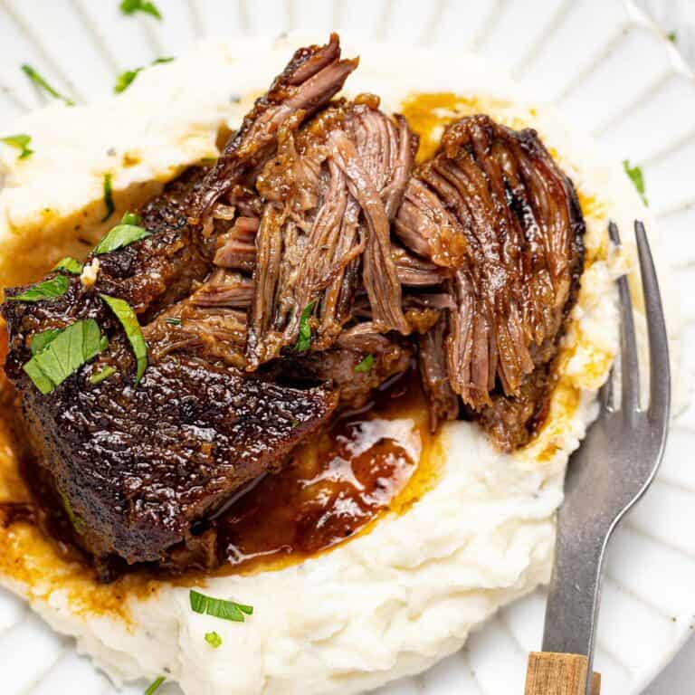

Braised Beef

Description
A meal-prep framework based on Ethan Chlebowski's
YouTube video. Prepares a large quantity of braised beef with minimal seasoning
to be customized to taste throughout the week
Ingredients
Your choice of:
- Chuck roast
- Short ribs
- Pork shoulder
- Chicken thighs
Additionally:
- Salt
- Neutral cooking oil
- Broth or water
-
Optional aromatics: onion, garlic, bay leaves, spices*
*If prepping for the week, omitting these is recommended to
allow seasoning the neutral meat for different cuisines later.
Equipment
-
A braising vessel like a dutch oven or pot with a lid, large
enough to completely submerge your meat.
Instructions
-
Salt the meat & preheat the oven: Generously
cover all sides of your braising meat with salt. Preheat oven to
275 degrees F.
-
Sear the meat: Over high heat, add oil to your
braising vessel and lay in your meat to sear, in batches if
necessary. Sear it on all sides to develop some nice browning.
If using aromatics, this is where you would brown them.
-
Add the braising liquid and put into the oven:
Add enough braising liquid to cover your meat. Water or broth
will work. Bring that liquid to a boil and then pop it into a
preheated 275 degrees F oven for 3 to 7 hours, depending on your
cut of meat (the exception here is chicken. Check it after an
hour).
-
Shred and set away for meals throughout the week:
Your braise is done when the meat shreds apart easily. Separate
that out into containers and save the broth to use as well.
Home